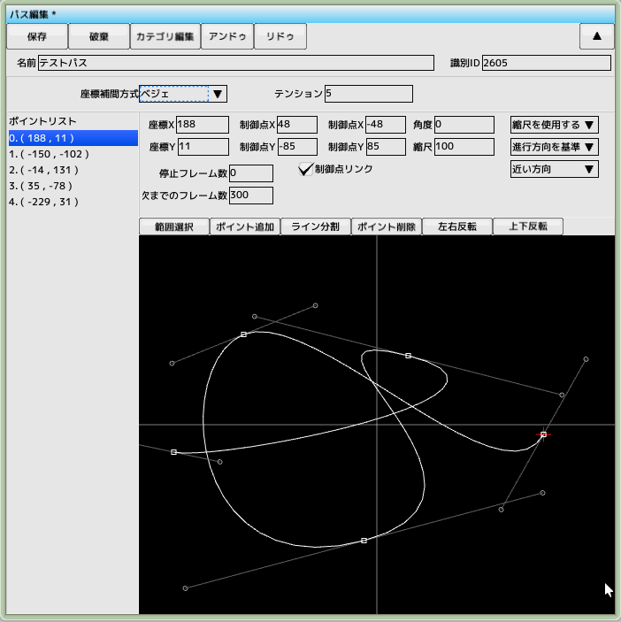

■元のページへ戻る
■元のページへ戻る

パス編集
ポイントを配置し、キャラクタをポイントに従って移動させることができます
移動経路をベジェやスプラインによる補間が可能です
角度や縮尺も指定可能です
■編集ウインドウ共通操作ヘルプはこちら
ポイントリスト
画面左端にあるリストが登録されているポイント一覧になります
ポイントを選択したい時は、このリストをクリックするか、直接ポイントをクリックします
選択したポイントの内容がパラメータとして表示されています
座標補間方法
- リニア
ポイントとポイントを直線で補間します
- ベジェ
ベジェ曲線による補間です。ハンドルを操作して曲線を制御できます
- スプライン
ポイントとポイントを曲線で補間します。テンションで曲がり具合を調整します
モード切替ボタン
- 範囲選択
何もないところドラッグすると範囲でポイントを選択することができます。範囲選択後、CTRL+ドラッグで指定したポイントを移動させることができます
- ポイント追加
ポイントを追加することができます。最初に追加したポイントが開始点となり、赤いクロスカーソルで描画されます
- ライン分割
ラインの途中をクリックするとその場所にポイントを挿入できます
- ポイント削除
選択中のポイントを削除します
- 左右反転
選択中のポイントを左右反転します
- 上下反転
選択中のポイントを上下反転します
マウスカーソルをポイント上や制御点上へ移動させるとそのポイントを移動させることができます
パラメータ
パラメータを変更するときはポイントを選択（複数可）してから行ってください
- 縮尺
拡大縮小を使用するときは「使用する」にしてください。縮尺には倍率に100を掛けた数値を指定します
- 回転
回転を使用するときは、コンボボックスから方向の基準となるものを選択してください。その方向が0度になります。回転方向を変更したいときはどちらへ回転するかを選択してください
- 停止フレーム数
ポイント上に来たときに停止する時間をフレーム単位で指定します
- 次までのフレーム数
次のポイントに到達するまでの時間をフレーム単位で指定します
- 制御点リンク
制御点をドラッグしたときに反対側の制御点も同時に移動させるかを指定します
■ページ上部へ戻る